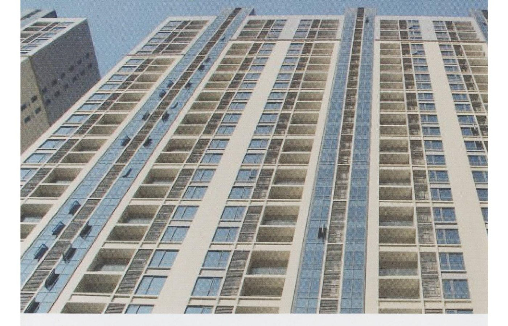

這三類材料在報價單上看起來只差幾個字，價差卻可能到兩三倍。它們不是等級高低的關係，而是各有適合的場合。用錯了，貴的那個也不會比較好。

§ 1.0
三者的根本差異：組成不同
彈性水泥是雙組份材料，由水性樹脂搭配無機骨材（通常含水泥）現場調和。它本質上是「有彈性的水泥」，與混凝土基材的相容性最好，因為兩者材質接近。
壓克力（丙烯酸）防水材多半是水性單組份，開桶即用。以高分子樹脂為主，有些會添加抗裂纖維。它是塗膜型材料，靠形成一層連續的彈性膜來防水。
PU（聚氨酯）防水材分水性與油性兩種。油性 PU 是二液型，需要主劑與固化劑按比例調和，靠化學反應固化。它的塗膜強度、伸長率與耐水性通常是三者中最好的，價格也最高。
§ 2.0
性能比較
表中的數值是各類材料的一般範圍，實際性能依配方差異很大，選用時仍應以個別產品的試驗報告為準。
§ 2.1
| 項目 | 彈性水泥 | 壓克力防水材 | 油性 PU |
|---|---|---|---|
| 組成 | 雙組份（樹脂＋骨材） | 單組份水性 | 二液型（主劑＋固化劑） |
| 與 RC 相容性 | 最好 | 良好 | 需底漆搭配 |
| 伸長率 | 中等 | 高（400%–1500%） | 高 |
| 耐水性 / 泡水 | 中等 | 一般，不宜長期泡水 | 佳 |
| 機械強度 | 中等 | 一般 | 佳 |
| 施工難度 | 需調和，略高 | 最簡單，開桶即用 | 需精確配比，最高 |
| 氣味 | 無 | 無 | 有溶劑味 |
| 單價 | 低 | 中 | 高 |
§ 3.0
什麼情況選哪一種
§ 3.1
- 浴室、廚房等室內夾層防水——彈性水泥。與水泥基材相容性最好，上面要貼磁磚時附著力也夠，而且沒有氣味，室內施作最合適。
- 一般屋頂、外牆的塗膜防水——壓克力防水材。施工最簡單、成本合理、伸長率足以吸收基材的溫差變形。台灣多數住宅屋頂用這一類。
- 會積水、上人、有機械磨損的屋頂或停車場——油性 PU。耐水性與強度是三者中最好的，雖然貴，但這種條件下用便宜的材料反而是浪費。
- 地下室外牆、擋土牆的迎水面——彈性水泥搭配滲透結晶材料。這種部位一旦回填就無法重做，材料的耐久性比施工便利性重要得多。
- 屋頂有既有裂縫或大幅變形——高伸長率的壓克力或 PU。伸長率 600% 以上的材料才能跟得上裂縫的開合。
§ 4.0
混搭是可以的，但要同一套系統
實務上很少單用一種材料。常見的組合是：彈性水泥做主防水層，上面用壓克力面漆做保護與裝飾；或是 PU 底漆搭配 PU 主材與 PU 面塗。
重點是層與層之間必須相容。水性材料上覆蓋油性材料，或反過來，都可能因為樹脂不相容而起泡、剝離。同一個系列的材料是搭配設計過的，跨系列混用之前務必先確認。
§ 5.0
價差要看整體，不是看單價
比較材料成本時，單價（元／公斤）意義不大，要看的是每平方公尺的材料成本——也就是單價乘以建議塗佈量。
舉例：一款單價低但需要 2.0 kg/m² 的材料，實際成本可能比單價高但只需 0.6 kg/m² 的材料更貴。再加上工資，如果 A 材料需要五道工序、B 材料三道，工期與人工的差距往往超過材料本身的價差。